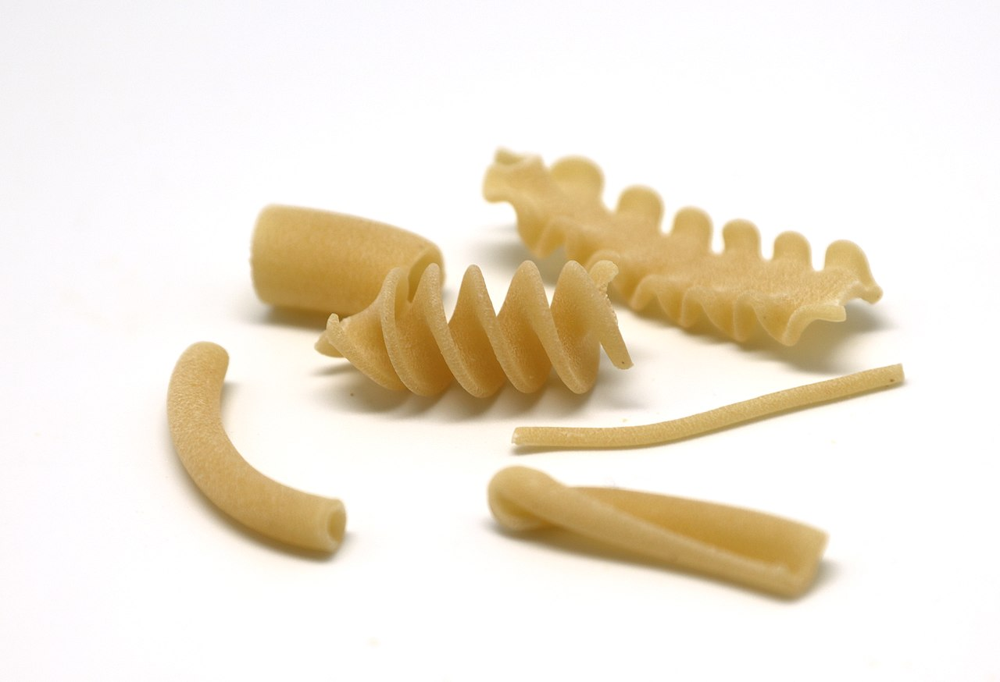
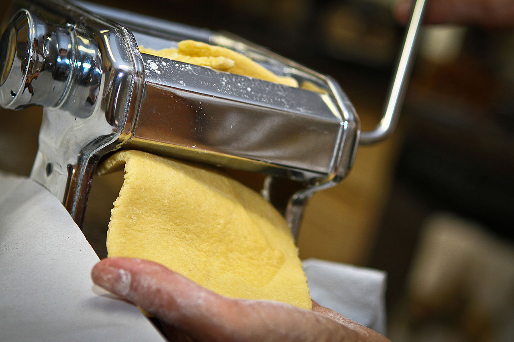
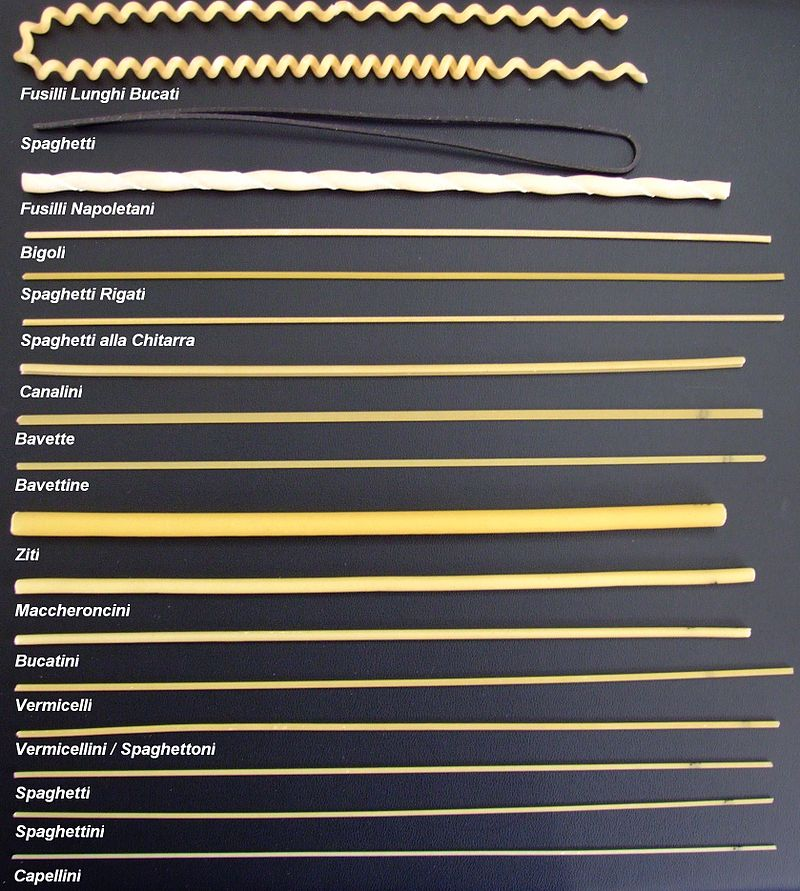
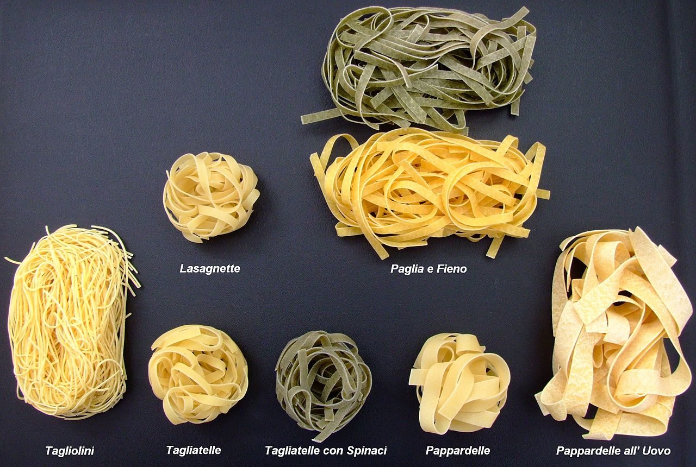
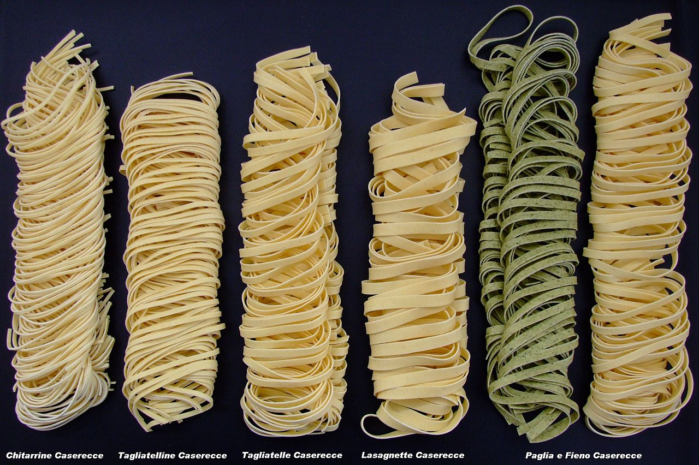
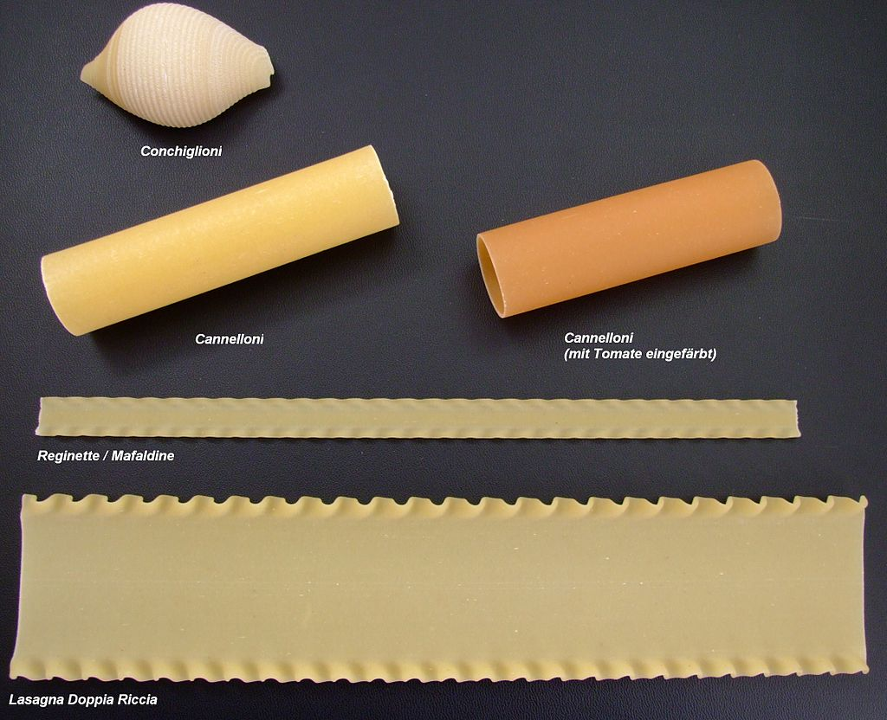
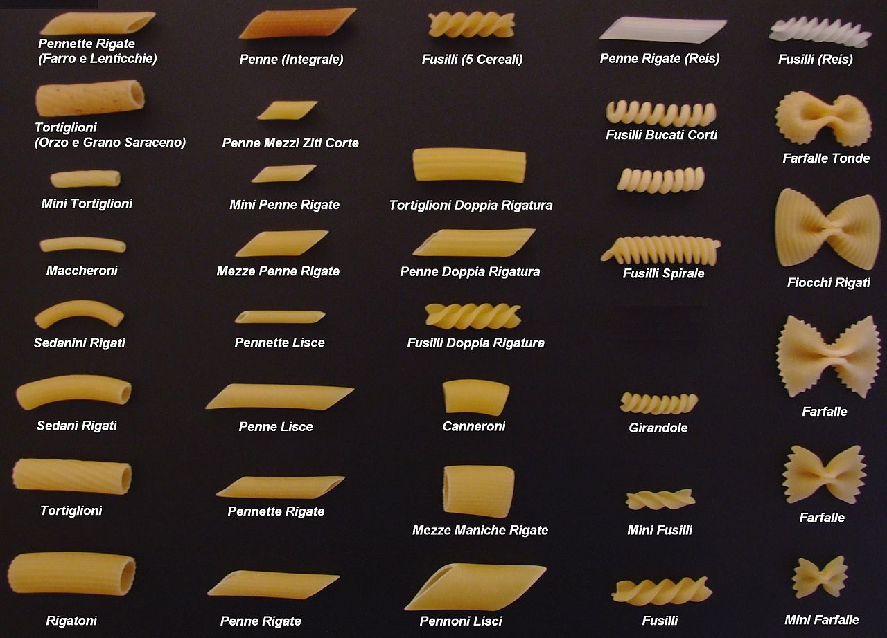
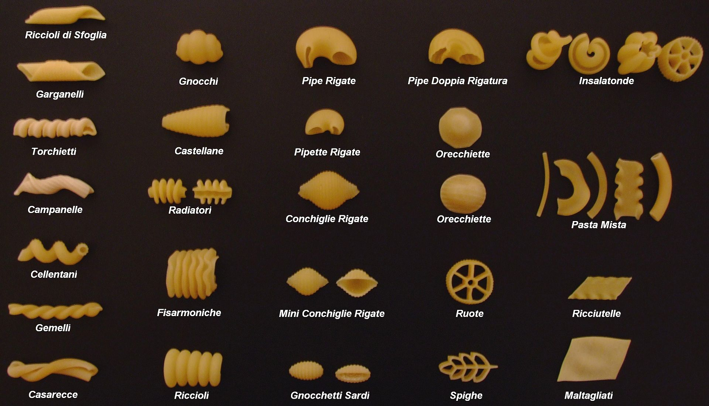
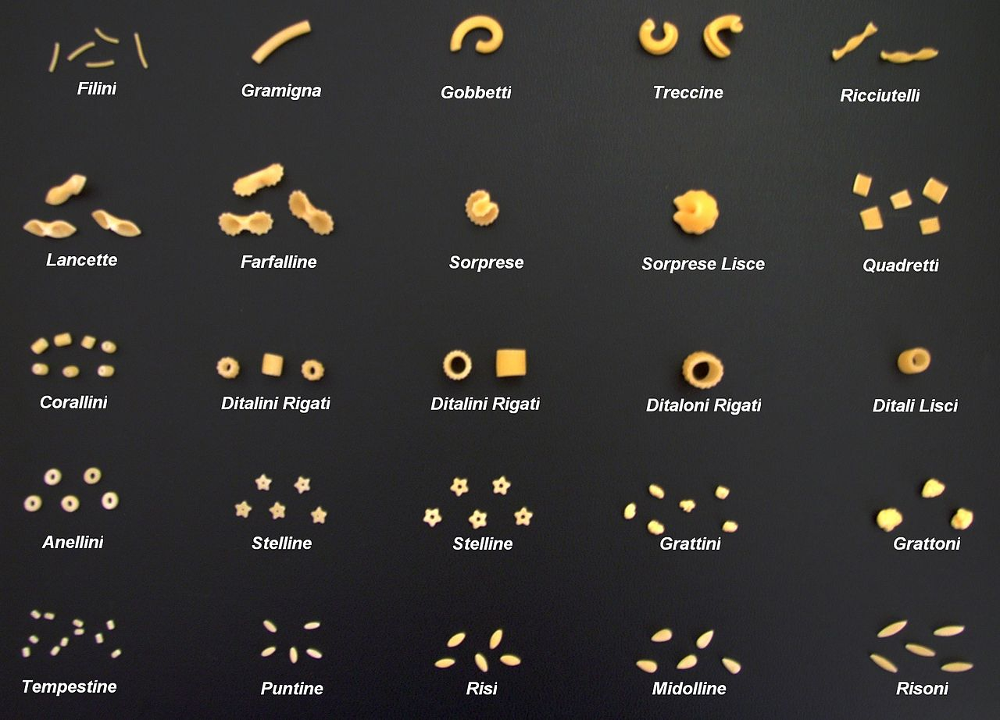

종류
건파스타(乾pasta, 이탈리아어: pasta secca 파스타 세카[*]) 단순한 튜브 형태에서부터 나비넥타이 모양에 이르기까지 약 350종이 존재한다. 덥고 건조한 날씨에도 오랫동안 보관할 수 있어서 주로 이탈리아 남부에서 사용한다. 건파스타는 "듀럼밀"로도 불리는 경질밀(grano duro) 세몰라와 물을 사용하여 만든다. 듀럼밀을 갈아 만든 거칠고 날카로운 입자 형태의 황갈색 세몰라는 파스타를 만드는데 적합하다. 이는 듀럼밀이 글루텐을 많이 함유하고 있어 녹말 입자가 쉽게 파괴되기 어렵고 수분 흡수를 조절하며, 지나치게 부풀어 오르지 않아 파스타의 형태를 단단하게 유지하기 때문이다 대부분의 건파스타는 압출성형 공법을 통해 상업적으로 생산되지만, 집에서도 만들 수 있다. 재료는 같은 재료를 사용하여 만들어도 이탈리아의 건파스타는 일반적으로 다른 곳의 건파스타보다 훨씬 우수한데 그 이유는 특유의 압출과 건조 방식에 있다. 건파스타는 모양이 복잡할수록 소스를 잘 붙잡아두는데, 봉긋하게 솟아 있거나 움푹 팬 모양은 파스타를 구리 틀에서 짜내는 압출과정에서 만들어진다. 구리 틀은 값도 비싸고 금방 못 쓰게 되는 단점이 있지만, 이탈리아에서는 최고의 건파스타를 만들기 위해 구리 틀을 일반적으로 사용한다. 반면 철로 만든 틀을 사용하는 다른 나라들의 파스타는 면이 너무 매끈해 소스와 잘 어우러지지 못하는 경우가 많다.건파스타를 만들 때는 온도와 시간도 매우 중요한데, 대량 생산되는 파스타는 짧은 시간에 너무 높은 온도에서 건조하기 때문에 이탈리아의 전통 파스타보다 질이 떨어진다.

생파스타(生pasta, 이탈리아어: pasta fresca 파스타 프레스카[*])의 경우 전통적으로 수작업을 통해 만들어지며, 때때로 간단한 기계(파스타기)의 도움을 받기도 한다. 식료품 가게에서 구입하는 생파스타는 기계에 의해 상업적으로 생산된다. 연질밀(grano tenero) 가루와 달걀에 물이나 올리브 오일을 더해 만드는 생파스타는 토양이 비옥하고 달걀이 풍부한 이탈리아 북부 지방에서 주로 사용된다. 달걀이 들어간 파스타를 "달걀 파스타(pasta all'uovo)"라 부르기도 한다. 생파스타를 만드는 반죽의 반대기는 "스폴리아"라 불린다. 건파스타가 주를 이루는 남부 지방에서는 특별한 날에 라비올리나 칸넬로니처럼 소를 넣은 생파스타를 만들어 먹는다. 일반적으로 그날 만든 생파스타 요리를 대접하는 것은 손님에 대한 정성과 그 집의 뛰어난 요리 솜씨를 보여주는 것이라 여겨진다. 그러나 생파스타가 건파스타보다 본질적으로 더 우수한 것은 아니다. 단지 어디에 쓰이냐에 따라 면이 달라질 뿐이다. 즉 어떤 파스타는 생파스타로만, 어떤 파스타는 건파스타로만 만들고 둘 다 가능한 것도 있다. 생파스타는 에밀리아로마냐 지방의 것을 최고로 친다. 이곳의 생파스타는 보통 크림 소스나 버터와 샐비어로 만든 간단한 소스와 함께 먹고, 여름철에는 가벼운 토마토 소스에 먹기도 한다.
건파스타와 생파스타 모두 다양한 모양과 변형을 가지고 있다. 파스타의 구체적인 형태는 310개로, 기록된 파스타의 이름은 1,300개가 넘는다. 이탈리아에서 일부 파스타의 모양이나 종류는 지역에 따라 다양하다. 예를 들어 파스타 모양인 카바텔리는 마을과 지역에 따라 부르는 이름이 달라 총 28개의 이름을 가지고 있는 것으로 유명하다. 파스타의 일반적인 모양은 긴 형태, 짧은 형태, 튜브, 납작한 형태, 시트, 수프를 위한 미니어처 형태, 속을 채우는 형태, 지역 특산품, 또는 장식품 등이 포함된다.
긴 파스타
달걀 파스타
생파스타
파스타 알 포르노용 파스타
짧은 파스타
짧은 파스타
수프용 파스타